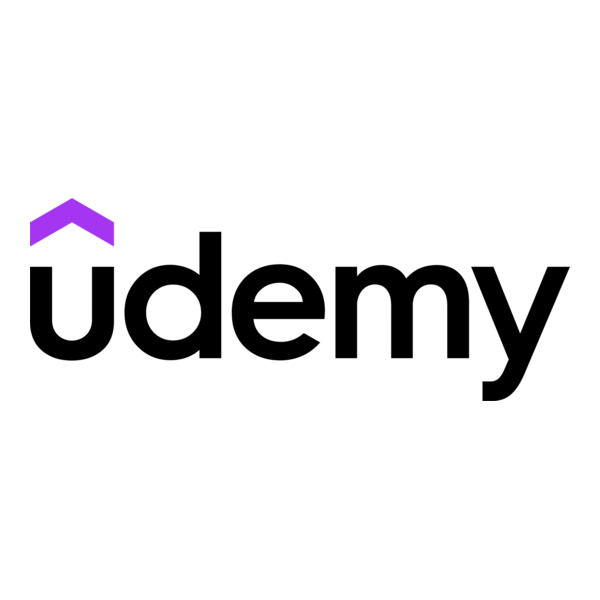
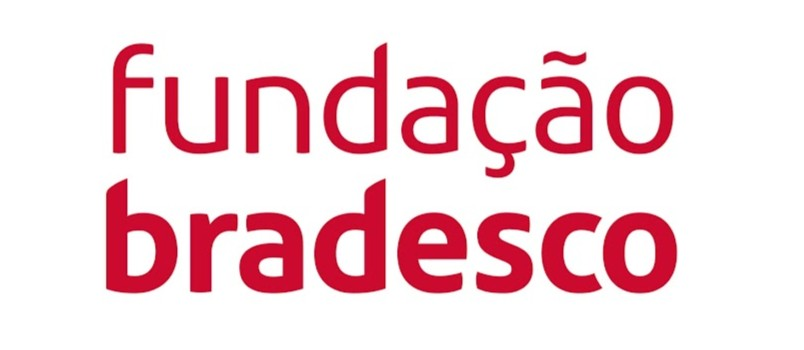

Atualmente cursando ADS no IESB, procuro criar novas experiências na área de tecnologia para agregar valor ao mercado de trabalho. Com uma base sólida em desenvolvimento, infraestrutura e inovação, acredito que cada desafio é uma oportunidade de evoluir como profissional e como pessoa.
Apaixonado por transformar ideias em soluções digitais, busco estágio e oportunidades para aplicar meus conhecimentos em Machine Learning, DevOps, segurança da informação e arquitetura de software. Estou constantemente ampliando meu repertório técnico e também habilidades de colaboração e pensamento crítico.
Brasília · IESB — Centro Universitário Conclusão: junho/2026
Vamos conversarAo longo do curso de ADS no IESB, já tive contato com matérias essenciais para uma visão 360° da tecnologia. Conhecimentos que vão desde fundamentos de programação até inteligência artificial e gestão de infraestrutura.
Essa bagagem me prepara para os desafios atuais do mercado, unindo fundamentos sólidos de desenvolvimento, segurança e automação com as práticas modernas de DevOps e inteligência artificial.
Samambaia Festas & Doces
Responsável pela gestão da equipe, atendimento ao cliente e definição de demandas operacionais. Atuo na organização dos fluxos de trabalho, garantindo eficiência e qualidade nos serviços prestados. Desenvolvi habilidades de liderança, comunicação e resolução de problemas em ambiente dinâmico.
MAJU Assessorias
Estágio de curta duração focado no aprendizado da ferramenta Bubble.io (plataforma no-code) e aprofundamento em lógica de programação e banco de dados. A experiência me proporcionou uma visão prática sobre desenvolvimento rápido de aplicações e integração com dados.
Conquistas e formações complementares que agregam valor à minha trajetória.

Udemy
Do VisualG às principais linguagens do mercado: C, C++, Python, C# e Java. Abordagem completa de algoritmos, estruturas condicionais, repetição, vetores, matrizes e lógica aplicada.
Concluído em: 2025 Ver certificado
Fundação Bradesco
Conceitos fundamentais de análise de dados, criação de dashboards interativos, modelagem de dados e visualizações com Power BI.
Concluído em: 2025 Ver certificado*Link em breve